Weboldalt készítek kis cégeknek.
Éttermeknek, fodrászatoknak, autószervizeknek, rendelőknek, iparosoknak és önkormányzatoknak. A weboldalt magam tervezem meg, írom meg és indítom el. Az első tervet három napon belül látja.
Az első konzultáció ingyenes. A telefont én veszem fel: +421 902 464 022
- A weboldal ára
- 250 €-tól
- Első terv
- 3 napon belül
- Válasz
- 24 órán belül
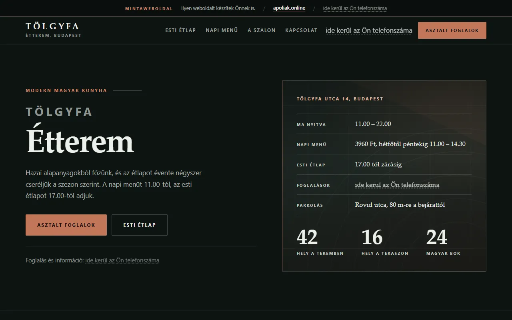
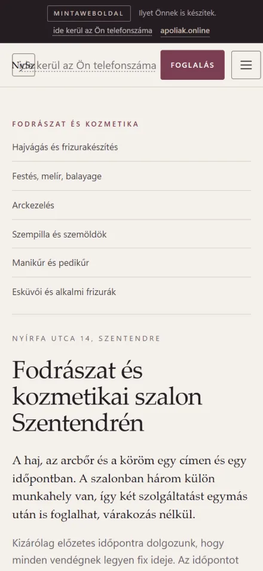
Mintaweboldalak
44 weboldalt készítettem kitalált vállalkozásoknak különböző ágazatokból, hogy lássa, milyen lehet az Öné. Bármelyiket megnyithatja és kipróbálhatja. A foglalás, a kalkulátorok és a kosár valóban működnek bennük.
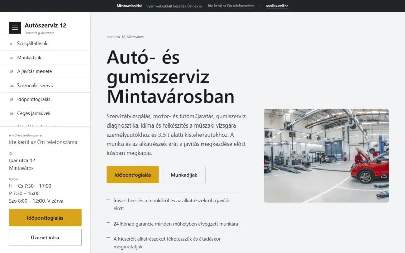
Autó- és gumiszervizAutószerviz 12Időpontfoglalás, a javítás ára előre látható.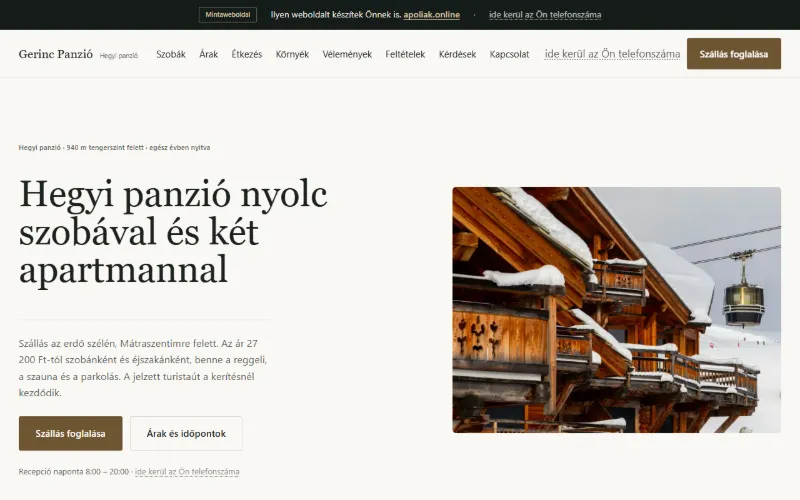
Hegyi panzióGerinc PanzióFoglalás az éjszakák, a reggeli és az idegenforgalmi adó kiszámításával.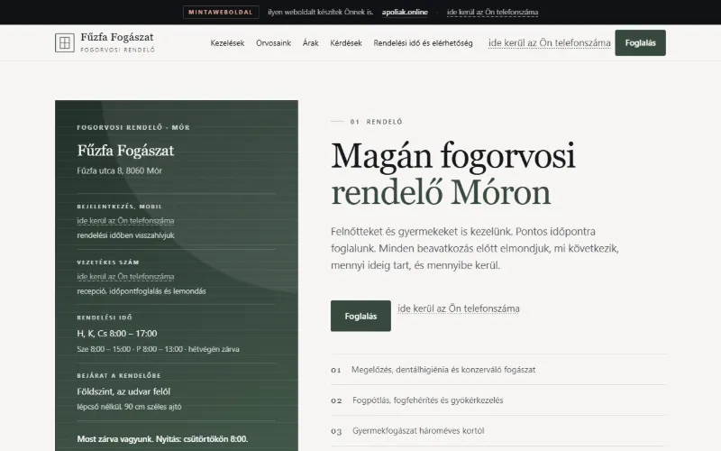
Fogorvosi rendelőFűzfa FogászatIdőpontfoglalás biztosítottaknak és önköltséges pácienseknek.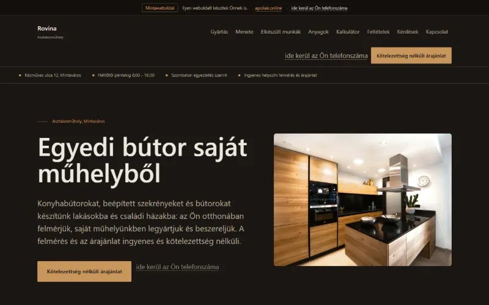
AsztalosműhelyRovina AsztalosÁrkalkulátor méret, anyag és felület szerint.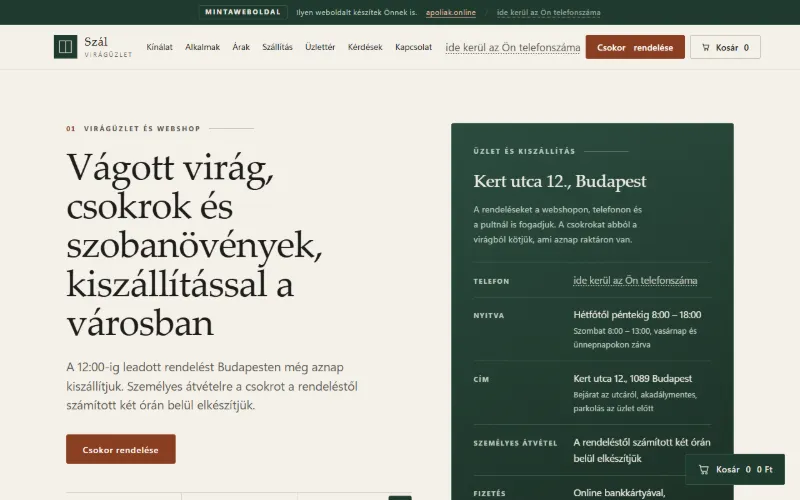
Virágüzlet webshoppalSzál VirágüzletKosár csokrokkal, szállítással és végösszeggel.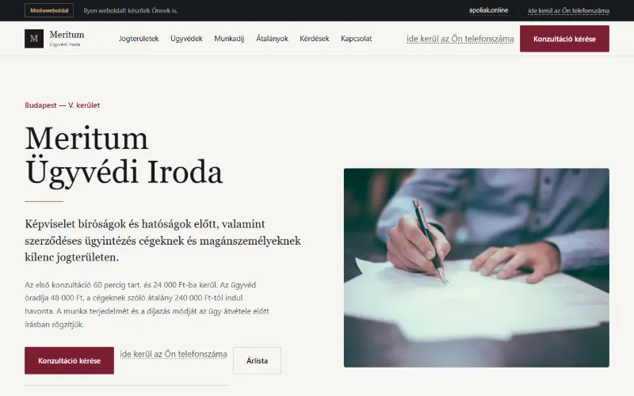
Ügyvédi irodaMeritum Ügyvédi IrodaMegkeresés a munkadíj becslésével ügytípus szerint.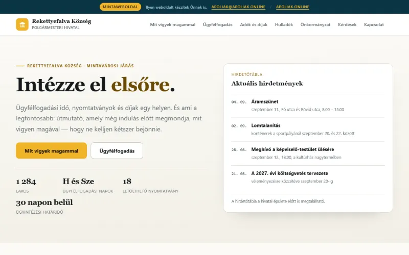
ÖnkormányzatRekettyefalva KözségMinden ügynél illeték, határidő és az iratok listája.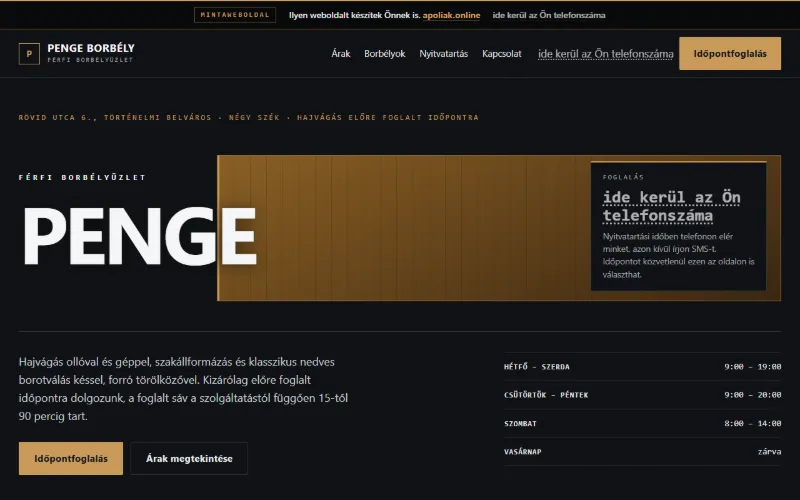
Férfi borbélyműhelyPenge BorbélyFoglalás a kiválasztott borbély legközelebbi szabad időpontjára.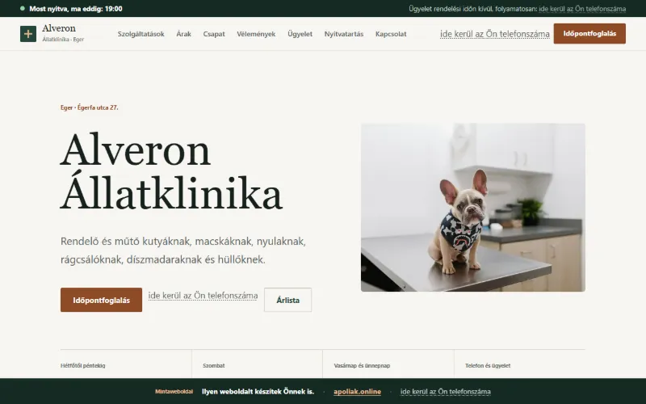
ÁllatklinikaAlveron ÁllatklinikaIdőpontfoglalás az állat fajtája és mérete szerint.
Miben segítek
Új weboldal
Olyan vállalkozásnak, amely eddig csak a Facebookon vagy az Instagramon van jelen, vagy egyáltalán nincs az interneten. Megtervezem a felépítést, a dizájnt és a szövegeket is.
Új külső a régi weboldalnak
A weboldalt újraépítem, a tartalmat átveszem a régiből, a régi címek átirányításával együtt.
Foglalás, rendelés, webshop
Azok a funkciók, amelyeket a mintákban kipróbált: időpontfoglalás, árkalkulátor vagy kosár kártyás fizetéssel.
Árak
Válassza ki, milyen weboldalra van szüksége, és rögtön látja az irányárat. A pontos összeget 24 órán belül megerősítem, és munka közben már nem változik. A fizetés két részletben történik: fele a megrendeléskor, fele az élesítéskor.
Minden csomag ára tartalmazza a domain beállítását, a HTTPS-tanúsítványt, a szerverre telepítést, az alap SEO-t és a forráskódot. A piaci árak szlovák webfejlesztők nyilvános árlistáiból származnak (2026. szeptember).
Az Ön összeállítása
- Standard
- 490 €
Összesen kb. 490 €-tól
Első terv 3 napon belül, kész 10 munkanapon belül.
A domaint és a tárhelyet közvetlenül a szolgáltatónak fizeti, az összeget a megrendelés előtt megírom.
Hogyan zajlik
Az első üzenettől az élesítésig. Minden lépésnél le van írva, mire lesz szükségem Öntől.
-
1. nap
Ír vagy telefonál
Elmondja, mivel foglalkozik, és mit intézzen a weboldal. 24 órán belül jelentkezem az árral és a határidővel.
Öntől: néhány mondat vagy egy rövid telefonhívás.
-
3 napon belül
Első terv
Elküldöm a terv linkjét. Megnyitja mobilon és számítógépen is, és megmondja, mit változtassak.
Öntől: észrevételek.
-
10 munkanapon belül
Kész weboldal
Hozzáadom a szövegeket, a fotókat és a funkciókat. A készülő weboldalt a linken végig látja. A Pro csomagnál ez 3–5 hétig tart.
Öntől: szövegek és fotók, ha vannak.
-
Élesítés
A weboldal élesben indul
Beállítom a domaint, a HTTPS-t és az alap SEO-t. Átadom a hozzáféréseket és a forráskódot is.
Öntől: jóváhagyás és a hátralévő összeg.
Rólam
Alex Poliak vagyok, a weboldalakat egyedül készítem Pozsonyból, egész Magyarország vállalkozásainak. Minden elintézhető távolról: telefon, e-mail és egy link a tervhez.
Ha ír vagy telefonál, közvetlenül hozzám jut. Egy év múlva is, amikor valamit változtatni kell a weboldalon, ugyanaz az ember jelentkezik, aki készítette.
A weboldalakat kézzel írom, fizetős sablonok és bővítmények nélkül. Gyorsan betöltődnek, és nem fizet értük havi licencdíjat. Hogy hogyan dolgozom, ítélje meg a 44 mintaweboldal alapján.
Amire számíthat
- Előre tudott ár. Beírom az ajánlatba, és munka közben nem változik.
- Fizetés két részletben. Fele a megrendeléskor, fele az élesítéskor.
- A weboldal az Öné. A domain az Ön nevén van, a kódot és a hozzáféréseket is megkapja.
- Nincs havidíj a weboldalért. A domaint és a tárhelyet közvetlenül a szolgáltatónak fizeti.
- Válasz 24 órán belül. A telefont én veszem fel.
Gyakori kérdések
Nem találta meg a választ? Hívjon a +421 902 464 022 számon, vagy írjon az apoliak@apoliak.online címre.
Mi történik azután, hogy írtam?
24 órán belül válaszolok vagy telefonálok, és rákérdezek arra, ami hiányzik az üzenetből. Utána írásban megkapja a terjedelmet, az árat és a határidőt. Ha megegyezünk, az első tervet három napon belül megkapja. Amíg meg nem rendeli a weboldalt, nem fizet semmit.
Lehet olyan weboldalam, mint valamelyik minta?
Igen. Írja meg, melyik minta tetszik, és mivel foglalkozik. A tervet az Ön vállalkozására készítem el, az Ön nevével, kínálatával és színeivel.
Mit jelent az ingyenes konzultáció?
Átnézzük, mire van szüksége a vállalkozásának. Javaslatot teszek a terjedelemre, megmondom az ár és a határidő becslését, és elmagyarázom, mi van benne a csomag árában. Telefonon vagy e-mailben intézzük. Kötelezettség nélküli, és a javaslatot akkor is megkapja, ha nem engem bíz meg.
Mennyit fizetek az első év után?
Magáért a weboldalért nem fizet havidíjat. Csak a domaint és a tárhelyet fizeti közvetlenül a szolgáltatónak. A havi 9 €-tól induló karbantartás választható, a weboldal nélküle is működik.
Ki fogja cserélni a napi menüt vagy az árlistát?
Előre megbeszéljük. Vagy úgy készítem el a weboldalt, hogy Ön is boldoguljon vele, vagy én csinálom a karbantartás keretében. Az ajánlatban le lesz írva.
Kell szöveget és fotót adnom?
Nem kell. Ha vannak szövegei, felhasználom őket. Ha nincsenek, én írom meg: a Pro csomagban benne vannak az árban, egyébként 19 € oldalanként. Ha nincsenek fotói, a dizájnt úgy készítem el, hogy ne legyen szüksége rájuk.
Mi van, ha nem tetszik a terv?
Megmondja, mit változtassak, és átdolgozom. A Starter árában egy módosítási kör van, a Standardéban kettő, a Prónál pedig folyamatosan módosítunk.
Kié a weboldal és a domain?
Önnek. A domaint az Ön nevére regisztráljuk, a weboldal és a forráskód kifizetés után az Öné. Ha valaki máshoz szeretne átmenni, mindent átadhat neki az én engedélyem nélkül.
Miért olcsóbb, mint az ügynökségek?
Mindent egyedül csinálok, így nem fizeti egy ügynökség rezsijét. A weboldalt fizetős sablonok és bővítmények nélkül írom, ezért havi licencdíj sincs benne. A szokásos piaci árakat minden csomagnál megtalálja az árlistában.
Meg fogják találni a weboldalamat a Google-ben?
Az alap SEO minden csomag árában benne van: kitöltött leírások, rendes címsorok, oldaltérkép és gyors betöltés. Az első helyet a találatok között nem ígérem, a sorrendet a Google a saját szabályai szerint határozza meg.
Írja meg, mire van szüksége
Elég néhány mondat arról, mivel foglalkozik, és mit intézzen a weboldal. Nem kell tudnia, melyik csomagot szeretné. 24 órán belül jelentkezem az árral és a határidővel.
apoliak@apoliak.onlineAz első konzultáció ingyenes és kötelezettség nélküli. Ha kapott tőlem e-mailt, elég arra válaszolnia.
Mit írjon meg
- Mivel foglalkozik és hol van a vállalkozása
- Van-e már weboldala, vagy a nulláról kezdünk
- Mit intézzen el a weboldal
- Melyik minta tetszik, ha van ilyen
Már az ügyfelem? Írjon a support@apoliak.online címre.